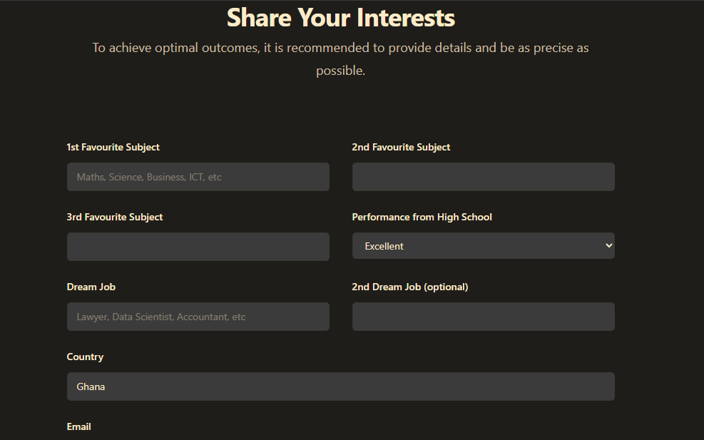

AI Course Recommendation System
Client
JCF Foundation
Role
Developer
Duration
Jan 2024 – Apr 2025

The Problem
Choosing a university course in Ghana is a decision that most high school graduates make with remarkably little information. They know their grades. They might know two or three courses by name. Beyond that, they're largely guessing - or following what their parents or friends suggest. The JCF Foundation was working with exactly this population, and they wanted something that could actually help a student figure out what to study based on who they are, not just what grades they got.
The brief was simple on the surface: build a system that recommends university courses to high school graduates. The recommendation had to feel trustworthy to a teenager making one of the biggest decisions of their life. A bad recommendation engine that confidently suggests the wrong thing is worse than no recommendation at all.
Two Iterations, Two Different Approaches
I built this in two distinct phases - and I'll be honest about why the first one wasn't good enough.
Iteration 1 - Random Forest: I started with a Random Forest classifier trained on student profile data - grades, interests, subject strengths, and some demographic inputs. The model performed reasonably well on paper. Accuracy metrics looked decent. But when I watched real students interact with it, the output felt mechanical. It would confidently output "Computer Science" or "Nursing" with no explanation, and students just stared at it. A recommendation without reasoning isn't a recommendation - it's just a label.
Iteration 2 - GPT- 3 Integration: The second iteration kept the structured data approach but layered GPT- 3 on top as the interface layer. Instead of outputting a course label, the system now had a conversation with the student - asking follow- up questions, explaining its reasoning, and presenting recommendations in natural language with context. "Based on your strong performance in mathematics and your interest in problem- solving, you might find Computer Science or Engineering rewarding because..." That shift changed everything about how students received the recommendations.
What Actually Made This Hard
Prompt engineering for a high- stakes use case is underestimated work. GPT- 3 is capable of producing confident- sounding nonsense, and when your user is a 17- year- old trying to pick a university course, confident nonsense is dangerous. I spent significant time building guardrails - constraining the model's output to the actual courses available in Ghanaian universities, preventing it from hallucinating institutions or programmes that didn't exist, and making sure it always acknowledged uncertainty rather than masking it.
The other challenge was cost. GPT- 3 API calls aren't free, and the foundation wasn't a well- funded organisation. I had to architect the system so that GPT- 3 was only invoked at the right moments.
Outcome
The second iteration was a materially different experience for students. The conversational interface reduced drop- off - students stayed with the recommendation process longer and reported higher confidence in the suggestions they received. The system is live at uni- path- one.vercel.app and was used as part of the foundation's career guidance programme.